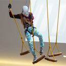

С днем рождения, активный гражданин!
21 мая 2017 года проекту исполнится три года!
Это наш день! Давайте проведем его с пользой:

За 3 года мы проделали долгий путь и добились впечатляющих результатов:
21 мая масштабное празднование дня рождения проекта «Активный гражданин»! Московские парки, музеи, библиотеки, зоопарк и любимые кафе приготовили подарки! Воспользуйтесь прокатом велосипедов, роликов, самокатов, сегвеев и даже лодок, проверьте свои силы в «ПандаПарках», подкрепитесь в модных городских кафе, побывайте на встречах с известными российскими писателями, поэтами, журналистами и блогерами и зажгите на большом праздничном концерте в парке Музеон!
Для активных граждан со стажем мы подготовили специальные подарки и сюрпризы, но москвичам, присоединившимся к проекту 21 мая, тоже не будет скучно! И «старичков» и «новичков» ждет незабываемый праздник!
Чтобы этот день остался не только в памяти, но и в семейном фотоальбоме, размещайте фотографии в Instagram с хэштегами #3годаАГ #активныйгражданин и распечатывайте их в наших инстаматах!
Проведите #3годаАГ всей семьей на самых
интересных площадках Москвы!
- 16 московских парков
- 46 точек проката
- 5 столичных библиотек
- 5 специальных шатров в парках
- 4 лодочных станций
- 7 «ПандаПарков»
- Московский зоопарк
- 20 творческих встреч с:
- Писателями
- Журналистами
- Блогерами
- Спортсменами
- Телеведущими
- Спортивно-музыкальный велооркестр
- Красочные арт-объекты и игровые зоны
- Фестиваль уличных театров
- Группы «Моральный кодекс» и «MBand»
Алексей Воробьев и Арсений Бородин
Реперы Вахтанг, Джиган, ST и NATAN
Quest Pistols Show, Ах Астахова
и участники проекта «Активный гражданин»
Зарядись
46 точек проката
16 столичных парков
В течение всего дня в 46 точках проката 16 столичных парков у любого участника проекта «Активный гражданин» будет возможность бесплатно взять в прокат велосипед, тандем, ролики, самокат, электромопед и даже сегвей!
Для этого необходимо подойти к специальной промо-стойке в парке или пункту проката инвентаря показать сотруднику проекта установленное мобильное приложение или распечатку профиля участника проекта, наш ответственный представитель зарегистрирует Вас и выдаст сертификат. Обменяйте сертификат в пункте проката на интересующий Вас спортивный инвентарь. Максимальное время проката – 30 минут.
Обращаем Ваше внимание, что вся техника выдается под возвращаемый денежный или документальный залог, установленный правилами проката.
Наслаждайтесь активным отдыхом в любимом городе!
| № | Пункт проката | Ориентир на местности | Перечень оборудования | Метка |
| 1 | ПКиО «Перовский» 10:00-22:00 |
|||
| Прокат в парке «Перовский» | Центральная площадь, около эстрады и парка аттракционов |
|
||
| Прокат в Терлецком парке | Около сцены | |||
| Прокат в парке у прудов «Радуга» | Напротив дома 1Б по аллее Жемчуговой (детская музыкальная школа) | |||
| 2 | Парк Победы на Поклонной горе 10:00-22:00 |
|||
| Прокат на Главной аллее | Слева от главного входа в парк, за памятником героям Первой мировой войны |
|
||
| Прокат на Аллее защитников Москвы | Район парковки для туристических и экскурсионных автобусов | |||
| 3 | ПКиО «Фили» 10:00-22:00 |
|||
| Прокат у главного входа | Справа от главного входа в парк |
|
||
| Прокат у входа в парк со стороны Минской улицы | В парковой зоне, справа от Минской улицы | |||
| Прокат у входа в парк со стороны Большой Филевской улицы | Городок аттракционов | |||
| 4 | ПКиО «850-летия Москвы» 11:00-21:00 |
|||
| Прокат в парке им. Артема Боровика | Около спортивной площадки, павильон №2 |
|
||
| 5 | ПКиО «Таганский» 10:00-22:00 |
|||
| Прокат в Таганском парке | Вход со стороны Тихого тупика, ул. Таганская вл.40-42, около футбольного поля |
|
||
| 6 | Парк «Музеон» 10:00-22:00 |
|||
| У памятника Петру I | Вход со стороны 3-го Голутвинского переулка |
|
||
| 7 | ЦПКиО им. Горького 10:00-22:00 |
|||
| Прокат «Музеон» | Напротив памятника Петру I, около кафе «Нудл мама» |
|
||
| Прокат «Ленинский пляж» | Андреевская набережная |
|
||
| Центральный прокат | Напротив кафе «Воккер» |
|
||
| На Пушкинской набережной «Мосигра» | Напротив причала Radisson около кафе «Пуэрпорт» | |||
| На Пушкинской набережной | В бывшем здании кафе «Чайхона № 1» | |||
| На Пушкинской набережной № 1 | Напротив Оливкого пляжа | |||
| Прокат на Пушкинской набережной № 2 | Напротив танцевальной площадки (театр Стаса Намина) | |||
| Прокат в Нескучном саду | Напротив дома 30 (Ленинский проспект) | |||
| Прокат «Западный вход» | Воробьевская набережная | |||
| Прокат «Причал» | Напротив стадиона «Лужники», рядом с входом на канатную дорогу | |||
| 8 | ПКиО «Кузьминки» 11:00-22:00 |
|||
| Прокат в парке «Кузьминки» | В конце центральной аллеи |
|
||
| 9 | ПКиО «Измайловский» 10:00—21:00 |
|||
| Прокат на Северной площади | Ст. м. «Партизанская», Северная площадь |
|
||
| Прокат у аттракционов «Кроха» | Ст. м. «Партизанская», у аттракционов «Кроха», слева от входа | |||
| Прокат на площади у эстрады | Ст. м. «Партизанская», центральная площадь около эстрады | |||
| Прокат у колеса обозрения | Ст. м. «Партизанская», около колеса обозрения | |||
| Прокат со стороны ул. Соколиная гора | Вход со стороны ул. Соколиная гора | |||
| Прокат около эстрады «Солнечная» | Рядом с эстрадой «Солнечная» | |||
| 10 | ПКиО «Сокольники» 10:00-22:00 |
|||
| На главной аллее | Главная аллея |
|
||
| У Золотого пруда | Золотой пруд | |||
| У Большого Путяевского пруда | Большой Путяевский пруд | |||
| 11 | ПКиО «Красная Пресня» 11:00-22:00 |
|||
| Центральный пункт проката | Около детской площадки |
|
||
| 12 | Парк «Северное Тушино» 10:00-22:00 |
|||
| Прокат за летней эстрадой |
|
|||
| Прокат на набережной | На набережной у фонтана «Лодка» | |||
| Прокат у детской площадки | 200 метров от центральной площади, за детской площадкой | |||
| Прокат на аллее | 500 метров от детской площадки вглубь парка в сторону набережной | |||
| 13 | ПКиО «Бабушкинский» 10.00-20.00 |
|||
| Прокат в парке «Бабушкинский» | Около спортивной и детской площадок |
|
||
| 14 | Парк «Усадьба Воронцово» 10:00-21:00 |
|||
| Прокат около Большого пруда | Центр парка около Большого и Третьего прудов |
|
||
| Прокат в Усадьбе Воронцово | Центр парка, около Большого и Третьего прудов | |||
| 15 | Парк «Лианозовский» 11:00-20:00 |
|||
| Прокат в парке «Лианозовский» | Прокат на центральной площади |
|
||
| 16 | Сад «Эрмитаж» 10:00-22:00 |
|||
| Напротив входа в ресторан Summer time |
|
|||
Внимание: Выдача инвентаря прекращается за 1 час до окончания работы проката.
Романтическая
водная прогулка
Активный гражданин, подарите себе на наше трехлетие романтическую водную прогулку в одном из 5 московских парков.
На специальной промо-стойке покажите ответственному представителю установленное мобильное приложение или распечатку профиля участника проект, получите сертификат на прокат водного транспортного средства: лодки или катамарана. Обменяйте сертификат в пункте проката. Максимальное время проката – 30 минут.
Обращаем Ваше внимание, что плавсредства выдаются под возвращаемый денежный или документальный залог, установленный правилами проката.
| № | Название парка |
Пункт проката | Перечень оборудования |
Метка |
| 1 | Парк Горького 10:00 до 22:00 |
Лодочная станция «Пионерский пруд» | - Лодки - Водные велосипеды: 2- и 4-местные |
|
| 2 | Парк «Сокольники» 10:00 до 21:00 |
Лодочная станция на Большом Путяевском пруду | Лодки | |
| 3 | Измайловский парк 11:00 до 20:00 |
Лодочная станция на территории пруда | Водные велосипеды: 2- и 4-местные | |
| 4 | Парк «Усадьба Воронцово» 10:00 до 22:00 |
Лодочная станция на территории пруда | - Лодка: 4-местная - Катамаран: 2- и 3-местные |
Вернитесь в детство
Подарите праздник своему ребенку или сами вернитесь в детство, преодолев на высоте один из веревочных маршрутов «ПандаПарка»!
Обменяйте сертификат на посещение «ПандаПарка» на баллы в Магазине поощрений проекта «Активный гражданин».
Один сертификат дает право участнику проекта 21 мая с 11:00 до 18:00 пройти 1 маршрут. Пожалуйста, ознакомьтесь заранее с правилами входа в «ПандаПарки» для детей здесь.
Сертификат в распечатанном виде или на экране смартфона необходимо предъявить в кассе ПандаПарка.
| № | Название парка |
Адрес | Фотография | Маршруты | Метка |
| 1 | «ПандаПарк» Фили | Пешком: Ст. метро «Багратионовская», последний вагон из центра, по лестнице налево, выход из метро направо (спиной к ТК «Горбушкин двор»). Далее пешком вниз по улице Барклая до троллейбусной остановки «Фили», через дорогу от остановки расположен центральный вход в парк, войдя в который, вы попадете на центральную аллею. Необходимо двигаться по центральной аллее до кафе «Панда», от кафе направо и через 50 метров будет «ПандаПарк». На машине: г. Москва, ул. Новозаводская, д. 22, тупик (ориентир - завод им. Хруничева). Оставляете машину на парковке и входите в парк (единственный вход в парк в конце улицы). По дорожке вдоль бетонного забора направо и далее по навигационным указатели «ПандаПарка» еще 2-3 минуты, вы выйдете к площадке «ПандаПарка». |
«Семейный» «Детский» «Храбрый» «Ловкий» «Смелый» «Смотровой» «Троллейный» «Веселый» «Экстремальный» |
||
| 2 | «ПандаПарк» Измайловский парк | Ст. метро «Партизанская», последний вагон из центра. Выходите из метро (выход один), из метро направо и по подземному переходу попадаете в Измайловский парк. Далее идете по центральной аллее, проходите парк аттракционов, сцену, колесо обозрения, за кафетерием поворачиваете налево и сразу же увидите «ПандаПарк». | «Семейный» «Детский» |
||
| 3 | «ПандаПарк» Митино | На метро до станции «Волоколамская». Далее по направлению к Пенягинскому пруду. Далее идете вдоль пруда, обходите пруд с левой стороны. Доходите до площадки оборудованной детскими атракционами и развлечениями за ней вы увидите ПандаПарк. Дорога от метро до парка занимает порядка 10-15 минут. | «Детский» «Троллейный» «Высокий» |
||
| 4 | «ПандаПарк» Коломенское | Добраться до парка «Коломенское» проще всего на метро. Садитесь в первый вагон поезда по направлению из центра. На станции метро «Коломенская» два выхода, вам нужен тот, который возле первого вагона. Направление выхода – кинотеатр «Орбита». Обратите внимание на указатели в метро: там будет присутствовать также и направление для выхода к парку. Поднявшись из метро, пройдите немного прямо вперед вдоль жилой застройки, вы попадете к главному входу в Коломенский парк. |
«Детский» «Смелый» «Троллейный» |
||
| 5 | «ПандаПарк» Мещерский | Маршрутное такси: от станций метро «Филевский Парк», «Славянский бульвар» — маршрут № 883 до остановки «Мещерский пруд». На электричке: Мещерский - ст. метро «Киевская» (Киевский вокзал), Москва - Нара, Москва - Апрелевка, Москва - Новопеределкино. Ехать 16 минут до станции «Сколково», далее пешком 1,7 км до центрального входа в парк на ул. Воскресенская, вл. 3. Войдя в парк через центральный вход, идите прямо вдоль пруда до конца, справа увидите красивую арку - вход на территорию лесопарковой зоны, войдите в нее, поверните направо и идите прямо 50 метров (будет стоять указатель «ПандаПарк», туалет) . Не доходя до футбольного поля поверните налево и идите еще 2-3 минуты - вы попадете в «ПандаПарк Мещерский»! На автомобиле: шоссе Минское, Сколковское или Боровское шоссе. Въезд на территорию парка со стороны Мещерского пруда. Воскресенская, д. 1а, стр.1. Войдя в парк через центральный вход, идите прямо вдоль пруда до конца, справа увидите красивую арку - вход на территорию лесопарковой зоны, войдите в нее, поверните направо и идите прямо 50 метров. Не доходя до футбольного поля поверните налево и идите еще 2-3 минуты - вы попадете в «ПандаПарк Мещерский»! Перед входом в лесопарковую зону (возле арки) размещена большая карта парка «Мещерский» - «ПандаПарк» там отмечен! |
«Вождь краснокожих» «Смелый шериф» «Тропа старателей» «Свободный индеец» «Дикий койот» «Летящая стрела» «Храбрый ковбой» «Быстрый мустанг» |
||
| 6 | «ПандаПарк» Zеленопарк | Московская обл., Солнечногорский р-н, Ржавки пос., 1-й мкр., ТЦ «Зеленопарк» |  | «Единый» «Скалодром детский» «Скалодром» «Rollglider» |
|
| 7 | «ПандаПарк» Ривьера | г. Москва, ул. Автозаводская, 18, ТРЦ «Ривьера», эт. 3 | 11 маршрутов Аттракцион «Прыжок» Скалодром «12 стенок» |
Как принять участие?
- Принять участие может любой участник, который накопил достаточное количество баллов.
Закажите сертификат на посещение интересного вам «ПандаПарка» в Магазине поощрений проекта. - Вы получите сертификат на электронную почту, указанную в профиле проекта.
- Сертификаты будут доступны в Магазине поощрений 17 мая. Количество сертификатов ограничено!
- Воспользуйтесь сертификатом 21 мая с 11:00 до 18:00
- Предъявите сертификат в распечатанном виде или на экране смартфона сотрудникам «ПандаПарка».
- На ребенка требуется отдельный сертификат. Внимание! Для детей действуют ограничения по росту. Ознакомьтесь, пожалуйста, заранее с правилами входа в «ПандаПарки» для детей здесь.
Наслаждайтесь захватывающим маршрутом!
Ароматный кофе в подарок в сети кофеен
COSTA COFFEE
Залог хорошего настроения — правильное начало дня!
Начните 21 мая с ароматного кофе в кофейнях Costa Coffee.
С 9:00 до 12:00 любой участник проекта «Активный гражданин» может получить чашку свежего зернового кофе на выбор: Американо, Капучино, Латте размера «Примо» при любом заказе в Costa Coffee. Для этого необходимо показать установленное на телефоне приложение «Активный гражданин» или распечатанную страницу своего профиля и сделать заказ.
| Метро | Адрес | Метка |
| Котельники | 1-й Покровский проезд, 5 (МЕГА Белая дача) | |
| Каширская | Каширское шоссе, 26 (ТЦ «Москворечье») | |
| Выставочная | Краснопресненская набережная, 12 | |
| микрорайон ИКЕА, к3 (МЕГА Химки) | ||
| Митино | Митинская улица, 16 (ТЦ "YES") | |
| Тёплый Стан | МКАД, 41-й километр, с2 (OBI Теплый Стан) | |
| Новокузнецкая | Пятницкая улица, 31/2с5 | |
| Новослободская | Селезневская улица, 13с1 | |
| Полянка | улица Большая Полянка, 30 | |
| Площадь Гагарина | улица Вавилова, 3 (ТЦ «Гагаринский») | |
| Кропоткинская | улица Волхонка, 9с1 | |
| Аэропорт | Ходынский бульвар, 4 (ТЦ «Авиапарк») |
Поздний завтрак в ДАБЛБИ
Самый важный прием пищи — завтрак! 21 мая порадуйте себя вкусным, аппетитным и полезным поздним завтраком в сети интеллектуальных кофеен «ДАБЛБИ».
С 11.00 до 14.00 любой участник проекта «Активный гражданин» может получить в подарок круассан или овсяную кашу (солёную, с яблоком, мёдом, бананом или смородиной) при заказе любого кофе. Для этого необходимо показать установленное на телефоне приложение «Активный гражданин» или распечатанную страницу своего профиля и заказать кофе.
| Метро | Адрес | Посмотреть на карте |
| Театральная | Театральный пр-д, 5/1 | |
| Площадь Революции | ул. Никольская, 10/2 | |
| Кропоткинская | ул. Волхонка, 9 стр. 1 | |
| Чистые пруды | Чистопрудный бульвар, 12с4 | |
| Арбатская | ул. Воздвиженка, 10, 25, БЦ «Военторг» | |
| Театральная | ул. Большая Дмитровка, 9/1 | |
| Лубянка | Милютинский пер., 3 | |
| Трубная | ул. Неглинная, 18 | |
| Чистые пруды | ул. Покровка, 16 | |
| Парк культуры | ул. Остоженка, 27/3 | |
| Тверская | ул. Большая Бронная, 15 | |
| Пушкинская | Трехпрудный переулок, 10, корп. 2 | |
| Цветной бульвар | Цветной бульвар 15, стр.1, Универмаг «Цветной» | |
| Трубная | ул. Цветной бульвар 2, БЦ «Легенды Цветного» | |
| Менделеевская | ул. Новослободская, 18 | |
| Павелецкая | ул. Валовая, 2-4/44, стр.1 | |
| Парк культуры | ул. Льва Толстого, 18, стр. Б | |
| Добрынинская | ул. Пятницкая, 73 | |
| Арбатская | ул. Арбат, 10 | |
| Новокузнецкая | ул. Балчуг, 3, корп. 2 | |
| Сухаревская | ул. Сретенка, 26, корп. 2 | |
| Новокузнецкая | ул. Большая Татарская, 7, стр. 4 | |
| Чкаловская | Сыромятнический переулок 2-й, 1, БЦ «Дельта Плаза» | |
| Выставочная | Пресненская наб., 2, «Афимолл Сити» | |
| Деловой центр | Пресненская наб., 8, стр.1 | |
| Деловой центр | МФК «Город Столиц» | |
| Международная | Пресненская наб., 10, корп. А | |
| Международная | «Башня на Набережной» | |
| Международная | Пресненская наб., 12, Башня «Федерация» | |
| Курская | ул. Земляной Вал, 33, ТРЦ «Атриум» | |
| Автозаводская | ул. Ленинская слобода, 19, БЦ «Омега плаза» | |
| Бауманская | Нижняя Красносельская, 35, стр. 50 | |
| Павелецкая | Павелецкая пл., 2/2, БЦ «Павелецкая плаза» | |
| Белорусская | Бутырский вал, 5, БЦ «Ямская центр» | |
| Проспект Мира | Проспект Мира, 26, стр. 1 | |
| Фрунзенская | Оболенский пер., 9/1 | |
| Маяковская | 4-я Тверская-Ямская, 27 | |
| Маяковская | Триумфальная площадь, 1 | |
| Спортивная | Новодевичий проезд, 4 | |
| Октябрьская | Крымский вал, 9, стр. 18 | |
| Комсомольская | ул. Каланчевская, 17, стр. 1 | |
| Выставочная | ул. Мантулинская, 5 | |
| Улица 1905 года | Трехгорный вал, 24 | |
| Сокол | Ленинградский проспект, 72, БЦ «Алкон» | |
| Пражская | ул. Кировоградская, 13, корп. А, ТЦ «Колумбус» | |
| Кунцевская | ул. Верейская, 17, БЦ «Верейская Плаза» | |
| Динамо | Ленинградский проспект, 31а, стр. 1, БЦ «Монарх» | |
| Преображенская площадь | ул. Электрозаводская, 27, стр.8, БЦ «Лефорт» | |
| Крылатское | ул. Крылатская, 17, корп 16, БЦ «Крылатские холмы» | |
| Аэропорт | Ходынский Бульвар, 4, ТЦ «Авиапарк» | |
| Мякинино | МКАД 66 км (внешн.), Box City | |
| ЗИЛ | ул. Автозаводская, 18, ТЦ «Ривьера» | |
| Тульская | Варшавское шоссе, 9, стр. 1, БЦ | |
| Тульская | «Даниловская мануфактура» | |
| Балтийская | Ленинградское шоссе, 16А, стр.4, ТЦ «Метрополис» | |
| Румянцево | 2-й км Киевского шоссе, 6, стр.1, БЦ «Комсити» | |
| Речной вокзал | Аэропорт «Шереметьево», терминал E |
Мороженое «Активный гражданин» от Baskin Robbins

Вкусного много не бывает! Побалуйте себя ванильным или фисташковым мороженым Baskin Robbins! С 10.00 до 14.00 любой участник проекта «Активный гражданин» может получить порцию мороженого в любом стационарном московском кафе Baskin Robbins. Для этого необходимо показать установленное на телефоне приложение «Активный гражданин» или распечатанную страницу своего профиля.
| Метро | Адрес | Посмотреть на карте |
| м.Академическая | Большая Черемушкинская, д.1 | |
| м.Алма-Атинская | Проектируемый пр-зд, 5386 / Бесединское шоссе, 15 ТЦ «Парк Хаус» |
|
| м.Алтуфьево | Дмитровское ш., д. 163, ТЦ «РИО» | |
| м.Арбатская | ул. Новый Арбат, д.17 | |
| м.Аэропорт | ул.Авиаконструктора Микояна, д.10, 4 этаж, ТЦ «Авиапарк» | |
| м.Аэропорт | ул.Авиаконструктора Микояна, д.10, 1 этаж, ТЦ «Авиапарк» | |
| м.Бибирево | Алтуфьевское ш., д.70, ТЦ «Маркос-Молл» | |
| м.Братиславская | ул. Перерва, д.43 ТЦ «БУМ» | |
| м.ВДНХ | ВДНХ, кафе между павильонами «Космос» и «Политехническим», недалеко от «Москвариума» | |
| м.Войковская | Ленинградское ш., д.16А, ТЦ «Метрополис» | |
| м.Домодедовская | Ореховый бульвар, д. 15/1, ТЦ «Галерея Водолей» | |
| м.Домодедовская | Каширское ш., 24 км МКАД, ТЦ «Вегас», остров | |
| м.Домодедовская | Каширское ш., 24 км МКАД, ТЦ «Вегас», фудкорт | |
| м.Домодедовская | Ореховый б-р, д. 14, корп. 3, ТРЦ «Домодедовский» | |
| м.Киевская | Киевская пл., д. 1, ТЦ «Европейский» | |
| м.Красносельская | ул. Красносельская, д.5, ТЦ «Тройка» | |
| м.Крылатское | Рублевское ш., д. 62, ТЦ «Европарк» | |
| м.Ленинский проспект | ул.Вавилова, д.3, ТЦ «Гагаринский» | |
| м.Лубянка | Театральный пр-зд, д.5, ЦДМ на Лубянке | |
| м.Марьина Роща | Шереметьевская, д.6 к.1, TЦ «Райкин Плаза» | |
| м.Медведково | Осташковское ш., д.1, ТЦ «Ашан» | |
| м.Мякинино | 66 км. МКАД, ТЦ «Вегас-2» (Крокус Сити) | |
| м.Новогиреево | г.Реутов, ТЦ «РИО» | |
| м.Новогиреево | Носовихинское ш., д.45, ТЦ «Реутов-Парк» | |
| м.Первомайская | ул. Первомайская, д.88 | |
| м.Рязанский проспект | Рязанский пр-т, д. 2, ТЦ «Город» | |
| м.Свиблово | ул. Снежная, д.27, ТЦ «Свиблово» | |
| м.Теплый стан | ул. Профсоюзная, д.129, ТЦ «Принц Плаза» | |
| м.Шоссе Энтузиастов | ш.Энтузиастов, д.12, ТЦ «Город», 1 этаж | |
| м.Шоссе Энтузиастов | ш.Энтузиастов, д.12, ТЦ «Город», 3 этаж | |
| м.Щукинская | ул.Щукинская, д.42, ТЦ «Щука» | |
| м.Юго-Западная | Мичуринский пр., д.3, ТЦ «Фестиваль» | |
| м.Ясенево | Новоясеневский пр-кт, д.11, ТЦ «Золотой Вавилон» | |
| Мега-Белая Дача-1 | г.Котельники, ТЦ «Мега-Белая Дача-1», кафе 1 | |
| Мега-Белая Дача-1 | г.Котельники, ТЦ «Мега-Белая Дача-1», кафе 2 | |
| Новая Москва | г.Троицк, ул. Городская, д.24 |
Специальное предложение
«Зарядись — подкрепись»
в ВАБИ САБИ
Отпразднуйте день рождения «Активного гражданина» сытным обедом или ужином в сети японских кафе ВАБИ САБИ.
21 мая в течение всего дня любой участник проекта «Активный гражданин» сможет получить скидку 50% на меню японских кафе ВАБИ САБИ. Для этого необходимо показать установленное на телефоне приложение «Активный гражданин» или распечатанную страницу своего профиля.
* В акции участвуют позиции: роллы, тёплые роллы, сеты и все виды чая в чайниках (500мл.).
| Метро | Адрес | Посмотреть на карте |
| Белорусская | Ленинградский пр-т, 12 11.00-23.00 |
|
| Проспект Мира | Мира пр-т, 29 11.00-23.00 |
|
| Краснопресненская | Баррикадная ул., 21/34 11.00-24.00 |
|
| Парк культуры | Зубовский б-р, 17, стр. 1 Круглосуточно |
|
| Партизанская | Измайловское ш. 71 А 11.00-24.00 |
|
| Кантемировская | Кантемировская ул., 47 11.00-24.00 |
|
| Третьяковская | Климентовский пер., 10 стр. 1 11.00-24.00 |
|
| Фрунзенская | Комсомольский пр-т, 21/10 11.00-01.00 |
|
| Китай-город | Маросейка ул., 7/8 11.00-24.00 |
|
| Митино | Митинская ул., 36, корп.1 09.00-23.00 |
|
| Таганская | Нижняя Радищевская ул., 5, стр.2-3 11.00-24.00 |
|
| Новогиреево | Свободный пр-т, 33 11.00-24.00 |
|
| Сокольники | Сокольническая пл., 4А 11.00-24.00 |
|
| Арбатская | ул.Воздвиженка, 9 11.00-24.00 |
|
| Киевская | пл. Киевского вокзала, 2 11.00-22.00 |
Узнай
Путешествие в животный мир
Увлекательное путешествие в животный мир и знакомство с фауной всего мира ждет активных граждан 21 мая в Московском зоопарке. Обменяйте сертификат на посещение зоопарка на баллы в Магазине поощрений проекта «Активный гражданин».
Как принять участие?
Принять участие может любой участник, который накопил достаточное количество баллов.
1. Закажите сертификат на посещение Московского зоопарка в Магазине поощрений проекта.
2. Вы получите сертификат на электронную почту, указанную в профиле проекта.
3. Для этого поощрения мы отменяем «Правило 1000 баллов», которое необходимо для осуществления первого заказа в Магазине поощрений, а это значит, что сертификат может приобрести любой участник проекта, имеющий достаточное количество баллов для их обмена.
4. Сертификаты будут доступны в Магазине поощрений после 17 мая. Количество сертификатов ограничено!
5. Воспользуйтесь сертификатом 21 мая с 7:30 до 19:00.
6. Предъявите сертификат в распечатанном виде или на экране смартфона ответственному сотруднику зоопарка
7. Проход по сертификатам осуществляется через служебный вход.
За 3 года активные граждане приняли ряд решений, которые изменили столичные библиотеки до неузнаваемости: из мрачных и пыльных хранилищ древних фолиантов они превратились в стильные, светлые и современные информационные пространства. В библиотеках не только выдают книга на дом, но и проводят творческие встречи с писателями и обучающие мастер-классы.
21 мая приглашаем Вас посмотреть на результаты нашей совместной работы, оценить реализованные решения и побывать на встречах с известными писателями, блогерами, журналистами и звездами эстрады.
Обязательна предварительная регистрация! Количество мест ограничено.
Регистрация будет доступна после 17 мая.
| Когда | Кто | Где | Регистрация |
| 11.00-12.00 |
Мария Аллаш Прима- балерина Большого театра, Народная артистка России И супруг Алексей Лопаревич - солист Большого театра, Заслуженный артист России Творческая встреча |
Городская библиотека №131 | Регистрация |
| 13.00-14.00 |
 Владимир Петрович Вишневский Владимир Петрович ВишневскийРоссийский поэт, лауреат профессиональных премий «Золотой Остап», «Золотое перо России», Почетный гражданин России. Награждён Почетным знаком «За достижения в культуре». Творческая встреча «Москва Первоприкольная» |
Городская библиотека №131 | Регистрация |
| 11.00-12.00 |
Игорь Чапурин Ведущий российский дизайнер и основатель бренда CHAPURIN, обладатель двух премий «Золотой манекен» Ассоциации высокой моды, участник официального расписания Недели моды в Париже, единственный российский модельер, сотрудничающий с Большим театром. Творческая встреча «От Москвы до Парижа: успех дизайнера Игоря Чапурина» |
Городская библиотека искусств им. А.П. Боголюбова | Регистрация |
| 13.00-14.00 |
Ах Астахова Ирина Астахова (сценический псевдонимом Ах Астахова) — одна из самых востребованных поэтов в современном русскоязычном пространстве. Ее выступления собирают полные залы в городах России, Украины, Белоруссии, Грузии, Казахстана, Франции, Германии, Чехии, Испании и Италии. Широкая известность к Ирине пришла в 2011 году, после публикации видеоролика на стихотворение «Тебя хоть там любят?». На сегодняшний день Ирина Астахова активно гастролирует и дала более 260 концертов в 80 городах и 10 странах, которые посетили более 80 000 человек. Творческая встреча |
Городская библиотека искусств им. А.П. Боголюбова | Регистрация |
| 11.00-12.00 |
 Сергей Николаевич Рязанский Сергей Николаевич РязанскийГерой России, летчик-космонавт РФ. Герой встречи расскажет о подготовке к полетам, выходу в открытый космос и о жизни на Международной космической станции во время своего полета. Творческая встреча «Будни космонавта» |
Центральная библиотека им. Н.А. Некрасова | Регистрация |
| 13.00-14.00 |
 Айгуль Бедретдинова (@vi66nya) Айгуль Бедретдинова (@vi66nya)Тревел-блогер, входящий в топ-10 инстаграмов Москвы по версии сайта «Афиша» и в Топ 20 тревел-блогов по версии Skyscanner Как привозить из путешествий только впечатляющие кадры Красивые фото из путешествий — планирование или экспромт? На встрече будет рассказано, как красиво снимать в путешествиях, в какое время, как находить места для съемки, как снимать без людей, а также как самостоятельно планировать путешествия. |
Центральная библиотека им. Н.А. Некрасова | Регистрация |
| 11.00-12.00 |
 Светлана Зейналова Светлана ЗейналоваРоссийская радио- и телеведущая. Специфика работы на ТВ и радио. Интересные истории. Говорим обо всем: о смысле жизни, о работе на тв, женских вопросах и т.д Творческая встреча |
Городская библиотека № 193 | Регистрация |
| 13.00-14.00 |
Андрей Бебуришвили Победитель шоу COMEDY БАТТЛ: «Суперсезон», резидент Comedy Club Творческая встреча |
Городская библиотека № 193 | Регистрация |
| 11.00-12.00 |
Константин Анисимов Автор телепередачи Вечерний Ургант, обладатель премии ТЭФИ Творческая встреча Автор телепередачи Вечерний Ургант, обладатель премии ТЭФИ расскажет секреты производства, самого цитируемого шоу на российском телевидении. |
Библиотека №12 имени И.А.Бунина | Регистрация |
| 13.00-14.00 |
Станислав Дужников актер театра и кино, телеведущий. Фильмография Станислава на сегодняшний день насчитывает более 70 картин, в которых ему с успехом удалось сыграть много ярких, запоминающихся образов, которые полюбили сотни телезрителей. Популярность Стасу Дужникову принесла роль увальня «Бомбы» в армейской комедии Романа Качанова «ДМБ». Зрителям прекрасно запомнился и его герой Миши Доценко в сериале «Каменская». Яркие актерские работы актер воплотил и в сериале «Марш Турецкого», комедиях: «Теория запоя» («Тракторист»), «Любовь морковь» (Данила), «Параграф 78» (Люба), «Уланская баллада» (Птуха), «Метро» (Михаил) и др. А сериал «Воронины» на телеканале СТС по утверждению многих телезрителей и вовсе стоит смотреть хотя бы из-за обаятельного Лени - героя Стаса Дужникова. С 2009 году Станислав Дужников служит в театре МХТ им. Чехова под руководством О.П. Табакова, где с успехом играет во многих постановках: «№ 13 D», «Женитьба», «Примадонны», «Дом», «Прошлым летом в Чулимске» и др. Творческая встреча |
Библиотека №12 имени И.А.Бунина | Регистрация |
Активный гражданин — это образ мысли и жизненная позиция! Приглашаем Вас на встречи с известными участниками проекта, которые с радостью поделятся своими секретами успеха и проведут мастер-классы по актуальным для современных москвичей темам!
Обязательна предварительная регистрация! Количество мест ограничено.
Регистрация будет доступна после 17 мая.
| Когда | Кто | Где | Место | Регистрация |
| 11.00-12.00 |
Алиса Гребенщикова Лауреат национальной премии «Триумф» (молодежная категория). Лауреат премии имени Фаины Раневской за лучшую роль в комедии. Создатель музыкально-поэтического проекта «Капель» и «Солнечная вязь». Творческая встреча с поклонниками: Всё, что стихами только правда. (Разговор о любви к словам, стихам и детях) |
Парк «Музеон» | Помещение «Круглая Школа» | Регистрация |
| 13.00-14.00 |
Кравц Кравц, он же Паффнутий, он же Паша Кравцов – молодой рэпер из Москвы, известный широкой публике в первую очередь песнями «Обнуляй», «Эндорфин», «Море», «Неуловимы» (при участии AIZA), «Проблема», «Я хотел бы знать» (при участии Tony Tonite). Не менее, чем сами треки прославились и видеоклипы к ним – яркие и узнаваемые. Свойственная Кравцу душевная открытость продолжает эволюционировать в новой пластинке, показывая артиста многогранным и искренним. Традиционное для рэпера обилие коллабораций. Творческая встреча с поклонниками |
Парк «Музеон» | Помещение «Круглая Школа» | Регистрация |
| 11.00-12.00 |
Мария Кравченко Актриса, участница проекта Comedy Woman, основатель или владелица мастерской флористики и декора Flowmaster Творческая встреча с поклонниками |
Сад «Эрмитаж» | Площадь у Щукинской сцены | Регистрация |
| 13.00-14.00 |
Олег Рой Российский писатель и общественный деятель. Автор более чем двух десятков книг различных жанров для взрослых и детей, а также статей в популярных печатных изданиях. Член Союза писателей России, Союза писателей Европы и Международного детектив-клуба. Творческая встреча |
Сад «Эрмитаж» | Площадь у Щукинской сцены | Регистрация |
| 11.00-12.00 |
Евгений Алдонин Футболист. Заслуженный мастер спорта России, двукратный чемпион России, пятикратный обладатель кубка России, обладатель Кубка УЕФА. Творческая встреча: Разговор о карьере, о жизни, спорте |
ПКиО «Фили» | Шатер, справа от Главной аллеи парка (за зданием проката) | Регистрация |
| 15.00-16.00 |
Дмитрий Юрьевич Куклачев Заслуженный артист России, художественный руководитель «Театра кошек Куклачева». Расскажет о секретах воспитания кошек и об уникальном театре, которому недавно отметил 25тилетний юбилей Презентация книги |
ПКиО «Фили» | Шатер, справа от Главной аллеи парка (за зданием проката) | Регистрация |
| 12.00-13.00 |
Ксения Юрьевна Безуглова Ксения Безуглова - человек, ломающий стереотипы о людях с ограниченными возможностями здоровья. Несмотря на полученную 8 лет назад травму позвоночника, продолжает жить счастливой и наполненной жизнью. Она счастливая жена, мама двух дочек, обладательница титула «Мисс мира-2013» и активный общественный деятель. Мастер-класс: Никогда не сдавайся |
ПКиО «Сокольники» | Около фонта за большой клумбой | Регистрация |
| 13.00-14.00 |
Александр Анатольевич Белоногов (Александр Анатольевич) Российский теле- и радиоведущий, широко известный как Ви-джей MTV Россия Творческая встреча |
ПКиО «Сокольники» | Около фонта за большой клумбой | Регистрация |
| 11.00-13.00 |
Мастер-классы от детского научного центра «ИнноПарк» На мастер-классах ребята смогут самостоятельно изготовить самолет-кукурузник, мини-роботов, калейдоскоп, а также сконструировать арочный мост. |
ПКиО «Кузьминки» | Поворот возле центральной аллеи на газоне | Регистрация |
| 16.00-17.00 |
Тимур Соловьев Ведущий программы «Доброе утро» на Первом канале. Встреча состоится в пресс центре Центрального дома художника, на ней обсудят работу на телевидении, прямой эфир и работу ведущего в целом. Творческая встреча |
Парк «Музеон» | Центральный дом художника | Регистрация |
Необычные раскраски с карандашами
И взрослым, и маленьким активным гражданам не будет ни одной минуты для скуки. В этот день в парках, в которых пройдут творческие встречи, мы подарим участникам проекта необычные раскраски с интересными ребусами, играми и головоломками. Какие секреты скрывает космос? Как выглядит город будущего? Давайте разгадывать и рисовать вместе!
| Когда | Где | Место |
| Парк «Музеон» | Помещение «Круглая Школа» | |
| Сад «Эрмитаж» | Площадь у Щукинской сцены | |
| ПКиО «Фили» | Шатер, справа от Главной аллеи парка (за зданием проката) | |
| ПКиО «Сокольники» | Около фонта за большой клумбой | |
| ПКиО «Кузьминки» | Поворот возле центральной аллеи на газоне |
В январе 2017 участники активные граждане голосовали за новые экскурсии в Дни исторического и культурного наследия. Одной из таких экскурсий стало посещение объекта культурного наследия федерального значения «Старый собор Донского монастыря». В День рождения проекта активные граждане смогут отправиться на специальную экскурсию.
Старый (или Малый) собор, построенный в 1591–1593 гг., является самым древним сооружением Донского монастыря. Он построен мастерами Бориса Годунова на месте походной полотняной церкви св. Сергия в честь Донской иконы Божией Матери в благодарность за избавление Москвы от нашествия крымского хана Казы‐Гирея. Предполагается, что автором сооружения был Федор Конь. Дошедшая до настоящего времени композиционная схема здания сложилась к концу 17 века, когда были пристроены трапезная и колокольня, расположенные с собором по одной оси (восток‐запад) и приделы с южной и северной сторон его. В 1930‐х гг. храм закрыли, в нем разместилось общежитие метрополитена. В 1946–1950 гг. выполнены работы по обследованию собора и реставрации фасадов и интерьеров по проекту архитектора Н.Н. Соболева. При реставрации в храме установили иконостас из разрушенной церкви во имя Харитона Исповедника, что в Огородниках. Были воссозданы порталы, оконные наличники трапезной, отреставрированы кокошники, декор фасадов. В 1948 г. по ходатайству Святейшего Патриарха Алексия возобновились богослужения. С этого же времени здесь стало совершаться мироварение, так как в трапезной части храма была устроена мироваренная печь для приготовления Святого мира для всех приходов Русской Православной Церкви.
В 1991 году Донской монастырь был возвращен Русской Православной Церкви. Вскоре в Малом соборе в результате поджога случился пожар, после которого храм отремонтировали.
Небольшой ярко-красный дом с белыми деталями на фасаде и небольшим мезонином стоит на Берсеневской набережной обособленно, в стороне от других. Даже в наши дни, словно «придавленным» соседней громадой советского «Дома на набережной», это здание останавливает на себе взгляд прохожего, особенно с Патриаршего моста. В былые же времена эти старинные палаты играли ведущую роль во всей местности.
Владение на этом берегу Москвы-реки овеяно легендами, не имеющими прочной исторической основы: называются имена боярина Ивана Никитича Берсеня-Беклемишева и даже знаменитого опричника Малюты Скуратова. Считается, что деревянный дом с каменным подклетом существовал здесь уже в XV-XVI веках – его следы были найдены реставраторами. Тем не менее, ясность в вопросе о владельцах наблюдается лишь с начала XVII века, когда земля переходит к сыновьям Степана Кириллова. В середине того же столетия единоличным хозяином территории становится думный дьяк Аверкий Кириллов – богатый купец и государственный деятель. На пике своей карьеры он возглавлял Казённый приказ, приказ Большого дворца и ряд других учреждений, ведавших торговлей, финансами государства и сбором налогов. Деятельность Аверкия Кириллова оборвалась в 1682 году, когда во время стрелецкого бунта стрельцы, поддерживающие царевну Софью, убили его как сторонника рода Нарышкиных.
Общественное положение Кириллова не могло не отразиться на облике его дома. В результате каменные палаты были выстроены с большим размахом: пышные наличники, изящные полуколонны и пилястры, карнизы с поребриком – всё это свидетельство о высоком благосостоянии хозяев. Богатство дома ярко описывали иностранные гости, дивившиеся не только красивым фасадом и впечатляющим двором с садом, но и богатым убранством с дорогой мебелью и обстановкой. О времени постройки дома можно судить по круглой плите в центре свода большой палаты – закладному камню с датой «1657». Соседняя церковь святой Троицы, более известная под названием Никольской на Берсеневке, также была выстроена Кирилловым, считалась его домовым храмом и даже соединялась деревянным переходом непосредственно с палатами. Здесь же в 1682 году был похоронен и сам Аверкий Кириллов. Церковь, лишившаяся в ХХ веке колокольни, сохранилась до наших дней и находится совсем рядом.
Окончательно облик здания сформировался в начале XVIII века, когда владение принадлежало дьяку А.Ф. Курбатову. В это время был выстроен верхний этаж, ранее бывший деревянным, а фасад получил европейские детали: волюты с тонкой белокаменной резьбой, руст на углах и каменный козырёк над входом. По одной из версий, достройкой дома ведал архитектор Иван Зарудный.
В дальнейшем палаты Аверкия Кириллова перешли в казну и были заняты различными учреждениями: камер-коллегией, межевой канцелярией, разрядным архивом, московской казённой палатой, сенатской курьерской командой. С 1870 года дом стал цитаделью защиты культурного наследия России: здесь обосновалось Императорское Московское археологическое общество во главе с графом Уваровым. После революции здание занимали различные научные учреждения, ныне здесь располагается Российский институт культурологии. Реставраторы поддерживают облик дома и продолжают исследование его истории.
Отдохни
21 мая 18.00
Парк «Музеон»
Кульминацией празднования Дня рождения проекта «Активный гражданин» станет финальный гала-концерт конкурса «Таланты Москвы», который пройдет в парке «Музеон».
В начале марта стартовал творческий конкурс «Таланты Москвы», у каждого жителя столицы была возможность продемонстрировать свои выдающиеся способности в одной из номинаций: «Художественное слово», «Оригинальный жанр», «Современная хореография», «Вокал». Конкурс проходил в несколько этапов: заочный отбор заявок и личные прослушивания.
На большой сцене состоится награждение победителей, а также совместные выступления финалистов конкурса и звездных наставников. Активных граждан ждут выступления известных звезд российской эстрады, а также насыщенная, яркая и оригинальная шоу-программа.
Творческий город
для творческих людей!
Пробуйте новое, экспериментируйте, раздвигайте границы своих возможностей и интересов! Отдыхайте и заряжайтесь энергией для нового плодотворного года с «Активным гражданином»!
21 мая в парке искусств «Музеон» с 17 до 20 часов пройдут различные творческие и анимационные активности:
Зона «Творчество»
Веселый спортивно-музыкальный велооркестр
Интерактивная стена «Оставь свой след»
Стильные и красочные арт-объекты

Цифровые шаржи
3D-живопись «Tilt Brush»
Зона «Энергия»
Пинг-понг для любителей активного отдыха
Твистер для самых гибких и выносливых
Настольный футбол для спортсменов и болельщиков
Зона отдыха «Пуфы»
Зона «Детство»
Красочный аквагрим
Картонный городок для проведения игровых программ
Гостей арт-площадки ждет масштабное красочное театральное представление-постановка с участием цирковых и театральных коллективов:
Воздушный театр «УФО»
Уличный театр «Эскизы в пространстве»
Театр «Светлые лица»
Вместе с художниками и артистами раскрасьте любимый город любимыми цветами, используя различные виды искусства! Хотите узнать, как это? Приходите 21 мая в парк искусств «Музеон»!
Сохраните воспоминания о Дне рождения «Активного гражданина» в семейном фотоальбоме — распечатайте фотографии из своего Instagram. Разместите фото с хэштегами #3годаАГ #Активныйгражданин и распечатайте их в инстаматах. Наши инстаматы установлены в 8 столичных парках!
| Парк | Метка |
| Парк «Сокольники» | |
| Парк искусств «Музеон» | |
| Парк Горького | |
| Сад им. Баумана | |
| ПКиО «Красная Пресня» | |
| ПКиО «Перовский» | |
| Сад «Эрмитаж» | |
| Зоопарк |
Обратная связь
Ваше сообщение отправлено, ответ придёт на указанную вами почту.